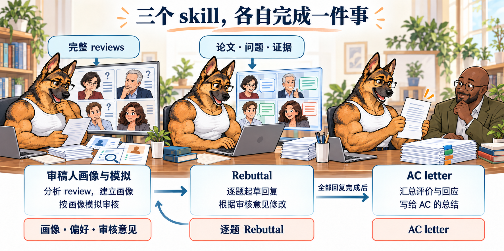

💪 StrongResponse
首句回答，证据跟上。
同一浏览器只计一次，再点可播放动画。
更新记录
- · AC letter 逐句格式与旁批 · skill 更新
- 补充可选开场总览、逐位审稿人三句结构和可选结论，先写肯定意见，再写关切与我们的回应。
- 用全占位自然段逐句高亮旁批，说明评分、原话、证据及结论的格式；仅借鉴组织方式，不含私人参考内容。
- 同步独立 AC letter skill、提示词与下载包；真实改分和确认解决均须有可核对记录。
- · 合作初稿、实验盘点、限字模板与改分模拟 · skill 更新
- 新增不限字数的合作环节，逐题讲清回复思路，汇总实验需求、数量和分工。
- 增加按审稿人分组的空白限字模板，参考材料仅借鉴组织形式，不含原文、原件链接或附件。
- Revise loop 增加原话扮演与模拟改分：提分就停止该分支，降分给理由后修改，最后人工核对事实与幻觉。
- · 场景插画与字体更新
- 四张流程图改为白背心德牧作者与不同审稿人的场景插画，统一标题与正文字体。
- · 四张关键流程图
- 用图说明审稿人投入优先级、逐题回复结构、Revise loop 和三份 skill 的分工。
- · 调整 AC letter 格式要求 · skill 更新
- 移除对称呼与摘要标签的限制。
- · 三个独立 skill、审稿偏好与模拟复核 · skill 更新
- 拆分 AC letter、Rebuttal、审稿人画像与模拟三个下载包。
- 第一部分增加从 Weaknesses 和审稿文本逆推偏好，Revise loop 按画像审核、反馈、修改、再审核。
- 删除额外添加的“限定结论”批注，改为实验分析；AC letter 恢复正面引文、评分、真实改分与逐审稿人总结。
- 开头增加独立打卡统计与随机卡通提分动画。
- · 上线与 StarPaper 互相链接
- 开头增加“论文写作请参考：StarPaper”，StarPaper 开头增加 StrongResponse 入口。
- 德牧换为白色贴身肌肉背心，保留完整画面与肩臂肌肉。
- 发布六章教程、审稿人画像、更新记录与可下载 skill。
- · 开头增加更新记录
- 增加与 BeautyPaper 一致的折叠栏，展开后可用独立滚动条查看记录。
- 最近更新排在前面，网页与 Markdown 同步显示。
- · 审稿人刻板印象与投入优先级 · skill 更新
- 八种常见刻板印象按话量、语气、评分和 Confidence 描述，删除模拟审稿原话。
- 投入比例简写为高、极大（>90%）、中和极高，完整回复始终是合格线。
- 新手杀手“笑面虎”放在画像最后，并加入投入表最后一行，优先级为极高。
- 补充尊重、情绪价值，以及漏答、降分和影响 AC 判断的风险。
- · 了解审稿人，分配回复精力 · skill 更新
- 第一章改为“了解你的审稿人”，原有回复流程顺移，形成六章结构。
- 章首加入动机：Response 时间紧急，合理分配精力将拉开你和竞争者的差距。
- 用灰色斜体注明会议回复范围，期刊回复之后有空会更新。
- · StrongResponse 独立整理 · skill 更新
- 整理问题清单、逐题回复格式、四类回答模板、Revise loop、追问与 AC 总结。
- 用同一份内容生成网页、Markdown 和 rebuttal skill，保留完整回复案例与旁批。
论文写作请参考：StarPaper
三份独立 skill： AC letter · Rebuttal · 审稿人画像与模拟 · 安装与用法

先用“审稿人画像与模拟”分析 review，再用 Rebuttal 整理不限字数的合作初稿、逐题思路和实验清单，确认后写完整或限字回复。随后让 AI 按原话扮演每位审稿人判断改分，按理由修改；模拟提分后交作者人工核对事实与幻觉。全部回复完成后，用独立 AC letter 总结真实评价与回应。当轮官方格式、字数、匿名与 AI 使用规定优先。

三个 skill：安装与用法
三份 ZIP 分别解压，保留各自完整文件夹。让 Codex 先读取对应的 SKILL.md，再给材料、任务和允许修改的文件。
- 审稿人画像与模拟：逆推关切与偏好，按画像模拟审核并给反馈。 审稿人画像与模拟 · SKILL.md
- Rebuttal：先整理合作初稿与实验清单，再起草完整或限字回复，根据模拟意见修改。 Rebuttal · SKILL.md
- AC letter：整理审稿人正面评价、评分、真实改分和核心回应。 AC letter · SKILL.md
先分析画像，再起草 Rebuttal；画像与模拟 skill 给意见，Rebuttal skill 修改，再按同一画像复核。全部回复完成后，另用 AC letter skill 总结。
复制给 Codex：按三个 skill 分工
分三步使用 StrongResponse： 1. 读取 rebuttal-reviewer-profile/SKILL.md，根据完整 reviews【】、原评分【】和真实讨论【】建立画像、偏好与原问题清单，每项保留原话依据。 2. 读取 rebuttal/SKILL.md，用论文【】、画像【】和真实证据【】先整理不限字数的合作初稿，逐题写清回复思路，汇总去重后的实验数量与分工。确认后再写完整或限字回复，填入后核对计数。随后把每位审稿人的原话交给画像与模拟 skill 扮演，给出意见与模拟改分判断；降分按理由改，维持时处理未解决关切，再按同一画像复核；模拟提分后结束该分支，交作者人工核对事实与幻觉。 3. 全部回复完成并经人工确认后，读取 ac-letter/SKILL.md，用真实 review、二轮记录、评分和已完成的回应写 AC letter。 当轮规则【】；允许修改的文件【】。没有依据不编结果，模拟改分不冒充真实改分；补实验、改稿和提交另按作者授权。
画像、回复和 AC letter 分别交付；模拟反馈留给作者内部使用。
1. 了解你的审稿人
Response 时间紧急，合理分配精力将拉开你和竞争者的差距。
本教程针对会议回复，期刊回复之后有空会更新。
- 先读懂每位审稿人真正卡在哪里，再决定把时间花在哪。这里的“价值”指额外回复投入可能带来的作用。
- 分开预估三件事：是否会参与第二轮讨论，解决关切后是否愿意调整评价，以及未解决的质疑会不会影响 AC 和其他审稿人的判断。
- 从 Weaknesses 和审稿人的全部文本逆推偏好：Strengths 看欣赏什么，Summary 看如何理解论文，Questions 看想得到什么证据，附录与细节问题看阅读深度。每项记录原话依据，不只凭分数或 Confidence 判断。
- 先看话量、语气、评分与 Confidence 的组合，形成初步画像；再看意见是不是触及论文的核心、有没有后续互动。尤其别被高分和客气语气麻痹：“笑面虎”也可能是需要极高投入的关键审稿人。
- 铁律 每位审稿人都先得到完整、正确、证据可定位的回复。再把额外精力投入关键审稿人和高价值审稿人；低价值审稿人保证逐题回复完毕即可，不需要追求完美。
- 画像随讨论更新。高价值与关键可能重叠，重叠时按关键处理；不活跃但留下了决定性负面论点的人，仍要认真处理其论点，供 AC 核查。分类与投入判断留给作者使用，不写进正式回复。
审稿偏好：从 Weaknesses 和审稿文本逆推
先找审稿人反复强调、措辞最强、与评分理由直接相连的关切。再判断他更需要实验、解释还是尊重感；同一人可以兼有多种偏好。下面是分析维度，不是替他预设身份。
| 偏好 | 看哪些原话 | 怎么回复 | 模拟复核重点 |
|---|---|---|---|
| 最关心的问题 | Weaknesses 中反复出现的质疑、明确的评分理由，以及二轮继续追问的部分。 | 先把这一问答透，其他回应围绕它补证据与解释。 | 把这一问设为最高要求；逐句检查是否真正消除疑虑。 |
| 情绪价值与尊重 | 肯定哪些细节，是否强调自己的建议被忽略，是否看重认真讨论和细致回应。 | 准确复述他的关切，解释意见如何帮助完善论文，给具体、克制的感谢。 | 检查是否被认真理解；强硬驳斥、敷衍感谢或转移问题都要给出反馈。 |
| 实验量与证据 | 多次要求对照、消融、重复实验、完整结果，或直接给出想看的实验设计。 | 按关切提供已有或新完成的对应实验，解释结果为何回答这道题。 | 按其要求检查证据类型、实验覆盖和结果分析；设计动机或未来承诺不能代替数据。 |
| 背景知识与解释 | 定义和流程问题较多，Summary 有误解，或低 Confidence 与基础概念问题同时出现。也可能是论文没有讲清楚。 | 可能需要更多背景：先解释概念和中间逻辑，用一个 case 带读，语气像认真讨论。 | 不默认他懂术语；检查解释是否足够、有无跳步，是否让人感到被说教。 |
| 细节与严格程度 | 是否读附录、发现细节遗漏、核对数字与设置，是否指出明确的逻辑链或近邻工作。 | 补齐其真正关注的细节，保持每题自洽；高分、客气也可能要求极高。 | 按阅读深度提高严格程度；重点检查漏答、实验设置、推理链和措辞是否经得起细读。 |
把“原话 → 偏好判断 → 回复方式 → 模拟检查重点”连起来。缺少依据的项写未知；有新追问或讨论记录时再更新画像。
| 类别 | 预估 | 投入比例 |
|---|---|---|
| 高价值审稿人 | 较可能参与第二轮，而且已有信号表明：核心关切得到解决后，愿意重新评价，存在涨分机会。 | 高 |
| 关键审稿人 | 较可能继续参与，且其负面论点可能被 AC 或其他审稿人采纳，拉低对论文的整体评价。是需要优先挽回的头疼类型。 | 极大（>90%，不亚于再写一篇） |
| 低价值审稿人 | 预估不会或很少参与后续回复，也没有仍未解决的决定性负面问题；继续打磨回复的额外收益较低。 | 中（肯定要回复呀！没有低投入审稿人！中规中矩到达合格线，至少 AC 会瞄一眼的） |
| 笑面虎审稿人（新手杀手） | 高分、客气、意见多、句句要点，Confidence 通常高。他尊重你，你尊重他；漏答或答不全有降分、影响 AC 拒稿判断的风险。 | 极高 |
下面是按话量、语气、评分和 Confidence 整理的常见刻板印象，用来提前分配精力。读 review 时把几项特征放在一起看，再根据具体问题与讨论更新判断。
1.1 高价值：友善支持型
话量：少到中等，关切比较集中；语气：正面、友善；评分：中高，或接近接收线；Confidence：通常中等。
常见行为：认可贡献，也愿意听解释。主要卡在一两个理解问题，反馈具体，解决关切后有重新评价的空间。
优先级：高
理由：有支持的基础，也有可以解决的卡点。让对方顺畅地理解你的答案，比反复铺已经认可的贡献更值得投入。
1.2 高价值：证据导向型
话量：中等到多，问题具体；语气：中性、克制；评分：中间或边界分；Confidence：通常中高。
常见行为：会提明确的对照、消融或解释要求，有相对清楚的判断门槛。比较在意证据能否回答原问题，而不是回复有多长。
优先级：高
理由：你知道他在等什么，投入方向比较明确。证据接得住，才有争取评价转变的空间。
1.3 关键：技术否定型
话量：多，分析很细；语气：负面，技术质疑明确；评分：低；Confidence：通常高。
常见行为：把核心结论拆开检查，盯数据泄漏、公平比较、替代解释或推导漏洞。不是只说不喜欢，而是能写出为什么结论不成立。
优先级：极高
理由：他的质疑直接影响论文能不能成立，也方便 AC 和其他审稿人沿着同一条论证理解。需要优先挽回核心问题。
1.4 关键：新颖性否定型
话量：中等到多，文献比较密集；语气：负面、挑剔；评分：低；Confidence：通常中高。
常见行为：很熟悉相关工作，反复盯最接近的方法，追问到底新在哪里。常把几个表面差异归为已有工作的组合或小改动。
优先级：极高
理由：新颖性不足是一个简洁、容易传播的拒稿理由。如果真实贡献没有解释清楚，其他正面结果也可能救不回来。
1.5 关键：强势讨论型
话量：多，后续跟进也多；语气：负面、立场鲜明；评分：低，或坚持负面推荐；Confidence：通常高。
常见行为：会读别人的意见，持续追问同一条核心争议，参与感很强。自己的否定理由写得清楚，容易成为讨论中的共同关注点。
优先级：极高
理由：不仅要回应他本人，还要处理这条论点对 AC 和其他审稿人的影响。回复如果漏了关键一步，讨论可能越来越不利。
1.6 低价值：简短支持型
话量：少，意见集中在小项；语气：正面；评分：高；Confidence：常见中或低。
常见行为：基本认可论文，主要提文字、引用和表达问题，不太展开技术追问，后续讨论也可能较少。
优先级：中
理由：肯定要回复呀！没有低投入审稿人！中规中矩到达合格线，至少 AC 会瞄一眼的。
1.7 低价值候选：公事公办型
话量：少，比较概括或有模板感；语气：中性、平淡；评分：常见中间分；Confidence：常见中或低。
常见行为：关注点较泛，详细展开和后续互动较少，主要问题也许只是表达、设置说明或小修。
优先级：中
理由：完整、正确地回复到合格线即可。如果少量意见里藏着决定性负面问题，就按关键审稿人投入，不能因为话少而漏掉。
1.8 新手杀手：笑面虎审稿人
话量：多，意见非常密集；语气：客气、诚恳、客观；评分：高；Confidence：通常高。
常见行为：给了高分，也给了你情绪价值，但是句句都是要点。读得非常认真，方法、实验、附录和论证细节都不放过，知道你的死穴。
优先级：极高
理由：他给了你情绪价值，你需要给他更大的情绪价值。他要的是尊重：他尊重你，你尊重他。认真接住每个问题、完整回答，就是这种尊重。发现你漏了问题，或者回答不全面，原本的高分也可能直接降下来。更要命的是，他的文字态度诚恳、客观，让人想要阅读（要命）；核心质疑一旦没有接住，可能直接把 AC 的判断推向拒稿。
参考：ICLR 2026 Reviewer Guide。官方指南要求参与讨论，并允许依据新信息调整推荐。这里的刻板印象与投入顺序是经验性整理；具体讨论方式以目标会议当轮规定为准。
审稿人画像、偏好与投入表
审稿人 [ID]： - 当前评分与 Confidence：【原始值、含义；缺失则写未知】 - 最欣赏的点：【Strengths / Summary 原话与位置】 - 阅读深度与理解偏差：【对应原话；是否读附录、哪里可能误解】 - 核心关切：【Q 编号、Weaknesses 原话；要求最高的问题】 - 偏好：【情绪价值 / 实验量 / 背景解释 / 技术细节；逐项附依据】 - 期待的回应：【实验、对照、case、引用、定义、讨论或尊重感】 - 模拟严格程度：【中 / 高 / 极高；依据与重点】 - 第二轮参与、改评开放程度、核心负面风险：【分别判断，附原话】 - 投入：【高价值：高；关键：极大；低价值：中；笑面虎：极高】 - 下一步与收手条件：【优先回答哪一问；何时转移精力】 原问题清单： | Q | 原话与位置 | 真正在意什么 | 期待什么证据或解释 | 模拟审核重点 | | :--- | :--- | :--- | :--- | :--- | | Q1.1 | 【】 | 【】 | 【】 | 【】 | 每一项能回查 review 或真实讨论。画像交给 Rebuttal 起草与 Revise loop 复用；新的讨论改变判断时再更新。
作者内部使用。最关键的问题与最高回复要求必须明确；画像不是对审稿人身份或最终评分的确定判断。
2. 整理问题与证据
先读完整 review，再写回答。不要只盯着 Questions：具体关切也可能出现在 Weaknesses、建议和评分理由里。
- 铁律 Weaknesses、Questions、建议和评分理由里的具体关切都要回答；保留原意，一句话有多问就拆开。
- 逐题记录：原问题 → 回应类型 → 现有依据及位置 → 缺口。
- 定义不清给定义，流程不清给案例，效果存疑给对照，实际错误就修正。
- 优先整理已有实验；确实缺证据时，提出能区分争议解释的最小检验，交作者决定。
- 铁律 向工具提供材料前，确认当轮保密与 AI 规则允许；不上传密钥、个人数据或无权使用的材料。
问题清单
| ID | 原问题 | 需要回答什么 | 已有证据与位置 | 缺口 | | :--- | :--- | :--- | :--- | :--- | | Q1.1 | 【审稿原话】 | 【具体结论】 | 【节、表、记录】 | 【仍缺什么；没有则写无】 | | Q1.2a | 【子问题：定义】 | 【对象与判定方式】 | 【定义所在位置】 | 【歧义在哪里】 | | Q1.2b | 【子问题：有效性】 | 【必要对照】 | 【已有比较】 | 【不能由现有结果回答的部分】 |
这张表供作者整理问题；正式回复按下一节的 Q&A 交付。
3. 合作环节：先把回复思路和实验写清楚
先不管字数，把每一题准备怎么回复、为什么这样回复、还缺什么证据写清楚，方便合作者一起讨论。合作稿按“审稿意见 → 需补充的点 → 分版本的逐题回复”组织；思路和实验安排确认后，再压缩成限字版。
- 每位审稿人单独整理，按原问题顺序编号；一句话有多个问题就拆开。每题保留问题要点、拟回答、回复思路、已有证据和缺口，不能只列标题。
- 回复思路要说明：审稿人担心什么，我们先回答什么，用哪项依据说明，为什么这项依据能回答这个问题。先把话说清楚，再考虑英文表达和篇幅。
- 逐题标明“无需实验 / 需要实验及编号 / 待确认”。需补充的点统一汇总，区分新增实验、重跑、已有结果重分析和文字说明，并填写负责人、截止时间及待确认事项。
- 同一个实验可回应多位审稿人的多道题，沿用同一个实验编号，只计一次。多个设置、模型或随机种子另列运行次数，不当成独立实验重复计数。
- 先给出实验数量与分类，再列明细：本轮确定要做多少项、其中还剩多少项、可选多少项、待确认多少项。未确定写待定，不能按零处理；已有结果复用和仅改文字不计新增实验。
- 合作稿可以保留中文讨论和不同版本；正式回复只保留已核实的回答。拟做实验、预期结果和待改文字分别标明，不能写成已经完成。
先一起确定每一题怎么答
先整理完整审稿意见，再逐题写出拟直接回答和推理过程。合作者在同一题下确认依据是否够用、是否需要实验、谁来补充；不要一开始就为了省字省掉解释。
把补充任务合并成一份实验清单
把所有标为需要实验的题与实验编号双向对应。每项实验写清要检验什么、固定什么、改变什么、与谁比较、看什么结果，以及什么结果支持或不支持回复。重复需求合并，新增实验、重跑和重分析分别统计。
确认思路后再写下一版
保留各题编号，记录本版改了什么、还有哪些问题要合作者决定。已有证据可直接起草；缺证据的题保留真实缺口，等实验和事实确认后再形成可提交的回复。
合作初稿：不限字数（空白模板）
# [合作稿标题] 版本：[版本] 更新：[时间] ## 审稿意见 ### Reviewer [编号] - 原问题编号与要点：[由作者填写] - 评分、信心与相关讨论：[由作者填写；没有则删去] [按实际审稿人数和问题数重复] ## 需补充的点 - [任务编号]：[要补充什么，以及为什么需要] - 类型：[新增实验 / 重跑 / 重分析 / 文字说明] - 回应问题：[Reviewer 编号 + Q 编号，可列多个] - 负责人：[姓名]；截止时间：[时间]；状态：[待确认 / 待做 / 进行中 / 已完成] - 待合作者决定：[需要决定的具体事项；没有则写无] ## 逐题回复（第 [版本] 版） ### Response to Reviewer [编号] > **Q[编号]: [问题要点]** **这题在问什么**：[用普通话说明审稿人的疑虑] **准备怎么回答**：[先写一句直接回答；尚不能确定时说明需确认什么] **回复思路**：[先解释什么，再用什么证据，怎样把证据与问题连起来] **已有依据**：[真实材料及位置；尚未核实则标明] **还缺什么**：[缺口，以及不补会影响哪一句回答；没有则写无] **实验需求**：[无需实验 / 需要实验 E[编号] / 待确认] **拟回复正文**：[按“直接回答 → 证据 → 解释 → 位置”写完整；未做事项用计划时态] **合作确认**：[负责人、合作者意见、需要决定的事项] **本版修改**：[改了什么，以及仍需确认什么] [同一审稿人的下一题沿用上述格式；其他审稿人另起标题]
这里只提供空白结构。按实际人数和问题数增删；合作讨论、负责人和版本记录留在内部，不粘入正式回复。
实验盘点与分工（空白模板）
# 实验盘点 ## 数量总览（按去重后的实验编号统计） - 确定需要新增的实验：[项数]；已完成：[项数]；还需完成：[项数] - 可选新增实验：[项数] - 是否需要尚待确认：[项数 / 待定] - 重跑已有实验：[项数]（单列，不计新增） - 已有结果重分析：[项数]（单列，不计新增） - 仅复用结果或修改文字：[任务数]（不计实验） - 预计实际运行：[次数 / 待定]；估算依据：[设置与重复次数，扣除可复用运行] ## 实验清单 | 实验编号 | 回应哪些问题 | 要验证什么 | 类型与必要性 | 状态与负责人 | | :--- | :--- | :--- | :--- | :--- | | E[编号] | [Reviewer + Q，可列多个] | [具体疑虑] | [新增 / 重跑；必做 / 可选 / 待确认] | [状态；负责人；截止时间] | [按去重后的实验项数增删行] ## 每项实验怎么做 ### E[编号]：[实验名称] - 目的：[这项实验要检验回复中的哪句话] - 输入与范围：[数据、对象、规模及适用条件] - 对照：[和什么比较] - 固定条件：[保持不变的内容] - 改变条件：[本实验要改变的内容] - 输出与评价：[得到什么，怎样判断] - 判断依据：[什么结果支持该回复；什么结果不支持] - 设置与重复：[设置数、重复次数和可复用部分；未知写待定] - 交付物：[结果表、分析文字或其他材料] - 对应问题：[Reviewer + Q，与上表保持一致] - 实际状态与结果位置：[待做 / 进行中 / 已完成；完成后填真实记录] ## 重分析与文字任务 - [任务编号]：[任务内容]；对应问题：[Q]；负责人：[姓名]；状态：[状态] ## 需要合作者决定 - [待确认事项、影响的问题及决定人]
每个“需要实验”的问题都能找到实验编号，每个实验也能回指问题。同一结果换图、换表或被多题引用不加计数；运行次数与实验项数分别报告。
4. 逐题回复格式
一题一个答案：结论 → 证据 → 解释 → 位置。首句把问题答了，后面才有必要读。
- 铁律 默认每位审稿人单独交付一个 Markdown 代码块；平台只有统一回复框或要求限字格式时，按平台要求合并正文。
- 铁律 完整回复的问题标题使用 > **Q1.1: [问题标题]**。限字版可以用“问题编号 + 简短要点”的列表，仍须与合作稿逐题对应。
- 铁律 一个大问题有多问，拆成 Q1.1a、Q1.1b，标题忠于原意。
- 铁律 第一句直接回答：是否题先给结论，证据不足就说明不能判断；原因题给原因，流程题给操作，数值题给具体值。
- 铁律 回答之后给必要设置、证据、解释与表号、节号或行号；不先感谢，不先讲背景。
- 铁律 可比较数据用表格，写全条件、单位、指标方向和统计口径；表后解释结论，不逐格复述。
- 铁律 一个小点一段；问题之间空一行。感谢具体、克制，放在相关解释后或文末，第一句仍先回答问题。
- 铁律 修改给真实位置；只有实际改过稿件，才能写成已修改。
- 铁律 同一实验跨 Q 引用，首次定义简短名称，后续统一使用；每个 Q 仍要独立读懂。
- 限字前先完成合作稿。按平台实际口径区分英文单词、字符或中文字符，确认是总上限还是每位审稿人上限；为关键问题分配篇幅，填入真实内容后重新计数，以提交框计数为准。
有字数限制时，先保留答案和关键依据
使用下面的限字模板：整体标题 → 可选的简短致谢 → 按审稿人分组 → 逐点回复。每点先直接回答，再保留最关键的依据、必要解释与位置；删重复背景和内部讨论，不能删掉影响结论的条件。致谢可省，每题首句仍先回答。
一位审稿人的完整回复
> **Q1.1: How does [method] differ from [closest prior work]?** The main difference is [specific mechanism or evaluation target]. [Prior work] uses [input or operation] to produce [output], whereas [our method] uses [corresponding input or operation] to produce [corresponding output]. This difference addresses [precise limitation] under [stated scope]. The description and comparison are in Section [X] and Table [Y]. > **Q1.2: Does [component] improve [metric]?** Under [tested setting], [component] [improves / does not improve] [metric] relative to [control] by [absolute difference and unit]. We hold [necessary conditions] fixed and change only [tested component]. | Configuration | [Metric and direction] | [Sample size or number of runs] | | :--- | :---: | :---: | | [Control] | [Verified value] | [Verified count] | | [With component] | [Verified value] | [Verified count] | The observed [finding] addresses [the reviewer’s concern] because [explanation of the result], supporting [the corresponding contribution]. The results and protocol are in [table or record] and Section [X].
方括号全部换成已核实材料；增删表格列取决于比较需要，不能删掉影响公平性或解释结果的条件。若 Q1.2 同时问定义与效果，拆为 Q1.2a、Q1.2b，分别首句回答。
限字回复：按审稿人分组（空白模板）
# Rebuttal [可选：一句简短致谢；篇幅紧张时删除] ## To [Reviewer ID] - **[问题编号]：[问题要点]** [直接回答]。[最关键的已核实依据与必要条件]。[这项依据为何回答疑虑，以及简短位置]。 - **[问题编号]：[问题要点]** [直接回答]。[必要解释或已完成修改及位置]。 ## To [Reviewer ID] - **[问题编号]：[问题要点]** [直接回答]。[最关键的已核实依据与必要条件]。[解释与简短位置]。
按实际审稿人数和问题数增删，问题编号沿用合作稿；不固定每题句数。内部另记【上限】【计数单位】【总限额或分审稿人限额】【各题预算】【填入后实际计数】，这些信息不放入提交正文。没有对应结果时如实写已有依据和当前缺口。
一段回复怎样读
教学模板：把方括号换成自己的真实证据。
Under [tested setting], [component] improves [metric] relative to [control] by [absolute difference and unit].1 We hold [confounding factors] fixed and compare [configurations] on [same test set].2 The observed [finding] addresses [the reviewer’s concern] because [explanation of the result], supporting [the corresponding contribution].3 The protocol and results are in Section [X] and Table [Y].4
StrongResponse · 原创教学模板
出处与复用范围
原创教学模板，不是真实审稿回复。
本指南原创内容采用 CC BY 4.0；转载请附作者、原文链接与许可，改写注明改动。
5. 四类回答模板
按问题选证据，不强行把每个问题都变成补实验。澄清用定义和流程，效果用比较，机制用能区分解释的检验。
- 铁律 解释性答复：先定义具体对象，再给输入、操作、输出；必要时用一条样例走完整个流程。
- 铁律 实证答复：报告真实绝对值、比较对象、指标方向与必要条件。平均值涉及波动时给相应不确定性。
- 铁律 合理不同意见：指出争议前提和证据，只讨论论文；确有错误就修正，不评价审稿人的能力或动机。
- 铁律 承诺不是证据。阶段性结果写实际范围；没有直接证据就说明缺口、缩小主张，不能把计划写成已完成。
- 铁律 表格保留影响判断的设置差异和负结果；删列是为了省阅读时间，不能为了改变结论。
5.1 定义与流程
> **Q1.2a: What does [term] mean, and how is it used?** [Term] denotes [concrete object and decision rule]. For input [x], [module] performs [operation] and returns [y] to [next module]. This interface is specified in Section [X]; [example or algorithm] shows [the disputed step].
术语先落到对象；举例要解释被问到的环节，不重讲整篇方法。
5.2 实验与对照
> **Q1.2b: Could [alternative explanation] account for [result]?** Under [matched setting], the result [persists / does not persist] when [confounding factor] is controlled. We compare [A] and [B] with identical [necessary conditions]; [metric] is [verified A] versus [verified B] ([direction]; Table [R]). This comparison [supports / does not support] [bounded conclusion]. [Remaining uncertainty] is not resolved by this test.
对照必须能检验替代解释；同一批数据换个表头，不等于排除了混淆。
5.3 有依据的不同意见
> **Q2.1: Does [specific concern] invalidate [claim]?** [Specific concern] does not invalidate [bounded claim] under [stated setting], because [verified fact]. The concern assumes [premise], whereas [paper location or verified record] specifies [relevant fact]. This supports [limited conclusion]. We agree that [valid part of the concern], and [verified clarification or correction, if applicable] is documented in [location].
只有证据支持时才使用“不推翻主张”的首句；依据不够就说明不能判断。不同意见也要承认成立的部分。
5.4 目前不能回答
> **Q2.2: Does [claim] hold under [untested condition]?** We do not have direct evidence for [claim] under [untested condition]. The available result in [location] covers [tested scope] only. We therefore limit our conclusion to [supported claim]. Establishing [broader claim] would require [specific comparison or measurement].
没有依据就把边界写清楚；只有稿件确已修订时，才能追加具体修改与位置。
6. Revise loop
Revise loop：把每位审稿人说过的话分别交给 AI，让 AI 按原话扮演这位审稿人，阅读当前回复并判断会提分、维持还是降分。模拟提分就结束这位审稿人的循环；降分则解释原因，按理由修改后再审，最后由作者人工确认。
- 铁律 逐位提供审稿人的完整原话、原评分、Confidence 和后续讨论，再载入第一部分画像。让 AI 依据这些材料扮演审稿人，不要只给画像标签或把不同人的意见混成一个角色。
- 按原话拟合核心关切、最高要求、证据偏好和阅读习惯。实验导向查实验，背景解释导向查概念与中间逻辑；不能为了让模拟提分而降低原要求。
- 逐题检查答案、依据、实验分析、语气与长度，再给整体判断：“提分 / 维持 / 降分 / 无法判断”。说明是哪条疑虑被解决或仍未解决，判断依据来自哪句原话和哪处回复；原评分或量表缺失时不编分数。
- 模拟提分时，记录依据并终止该审稿人的修改循环，交作者人工确认。模拟降分时，必须列出具体理由、对应问题、问题回复位置和最小改法，再由 Rebuttal skill 按理由修改；维持时同样指出尚未解决的关切并继续针对性修改。维持且原问题均已明确回答、没有剩余可执行修改，或原分已达到量表上限时，记录理由并交作者人工确认；不为追求模拟提分反复改写。
- 铁律 修改后仍使用同一份原话、同一画像和同一评分口径复核。新 review 或讨论改变依据时才更新画像；缺关键材料导致无法判断时列出缺口，交作者确认，不反复猜测。
- 这个环节可自动完成“模拟审核 → 给理由 → 修改 → 再审核”。模拟结束后，作者人工核对每题是否答全、实验与数值是否真实、引用和修改位置是否存在、是否有幻觉，再决定提交。模拟改分仅是内部判断，不能记作真实审稿人改分；实验、改稿和提交仍按作者授权执行。
1. 把每位审稿人的原话交给 AI 扮演
逐位发送完整 review、原评分和后续发言，再附论文、现有证据与当前回复。要求 AI 以这位审稿人的关切和判断标准阅读，而不是泛泛检查文风。
2. 给出意见，并判断是否会改分
先逐题指出是否答到点上、证据是否足够，再判断会提分、维持还是降分，并把理由对应到原话和回复。材料不足时写无法判断，不补造评分或评价。
3. 提分就停，降分就按理由改
模拟提分时结束该审稿人的循环；模拟降分时先说明为什么，再按具体理由修改回复，交回同一角色复核。维持时针对未解决的关切继续修改；需要实验或作者决定的事项单列。维持且原问题均已明确回答、没有剩余可执行修改，或原分已达到量表上限时，记录理由并交作者人工确认；不为追求模拟提分反复改写。
4. 最后由作者人工核对
检查回答完整性、事实、数值、引用、实验状态和修改位置，确认没有幻觉。人工发现问题就修正并重新复核受影响的回复；确认后再按当轮规则提交。
作者的使用经验
我每次都会用这个环节，基本都提分了，对我特别有效。大部分过程可以自动完成，最后再人工确认有没有幻觉。这里说的是个人使用经验；AI 对改分的判断是模拟意见，实际改分以真实审稿记录为准。
让 Codex 扮演审稿人并运行 Revise loop
运行 Revise loop，逐位处理审稿人。 论文：【】；每位审稿人的完整原话、原评分和后续讨论：【】；画像：【】；当前回复：【】；真实证据：【】；当轮评分、字数及使用规则：【】；允许修改的文件：【】。 1. 读取 rebuttal-reviewer-profile skill。分别扮演每位审稿人，依据其完整原话和画像设定关注点、严格程度与阅读习惯。 2. 按原问题清单逐题审核。输出：Q｜对应原话｜回复位置｜是否回答｜具体意见｜缺失依据｜最小改法。 3. 给出本位审稿人的整体模拟判断：提分 / 维持 / 降分 / 无法判断，并说明原话依据与回复依据。仅在已提供真实原评分和当轮量表时给出模拟分数；始终标明“模拟”。 4. 若模拟提分，记录理由，结束该审稿人的循环，交作者人工确认。若模拟降分，先列明降分理由及对应 Q，再读取 rebuttal skill，按理由修改获授权的回复。维持时针对未解决的关切修改；若已无可执行修改或原分已满分，记录理由并交作者人工确认。缺材料而无法判断时交作者确认。 5. 修改后，用同一份原话、同一画像和同一评分口径重新审核，再判断提分、维持还是降分。不降低标准，不编造结果；缺数据或需要实验时单列待办。 6. 各位审稿人的模拟循环结束后，交作者逐题核对事实、数值、引用、实验状态和修改位置，确认没有幻觉。人工发现问题时修正并复核受影响的回复。 最终交付：可复制的正式回复；独立的内部模拟改分判断、理由与修改记录；实验或证据缺口；待人工确认事项。模拟判断不放入正式回复或 AC letter，不自动提交。
把真实审稿人的原话作为角色依据；模拟反馈、模拟评分和个人使用经验都不能替代真实审稿记录。最后保留作者人工确认。
7. 追问与 AC letter
追问用 Rebuttal skill 只补新增信息。完成回复后，再用独立的 AC letter skill 总结审稿人的评价、改分与核心回应。
- 铁律 保留原 Q 编号和问题关系；新子问可续为 Q1.2c，编号仍以平台要求为准。
- 铁律 先回答追问，再定位新增证据；已经讲清的背景用位置引用。
7.1 追问回复模板
> **Q1.2c: [Faithful title of the follow-up question]** [Direct answer to the new question, with the necessary scope]. **New evidence**: Compared with Q1.2, we now provide [verified result or clarification]. Under [necessary setting], [comparison or reasoning] shows [specific finding] ([table / section / lines]). This supports [bounded conclusion] because [link between the evidence and the question]. **Revision**: Section [X], lines [Y–Z], now states: “[Exact wording of the completed revision].” **Remaining issue**: The evidence covers [tested scope]; it does not establish [unresolved claim]. [Specific evidence still needed, if any].
保留原 Q 编号，追问新子项续编。填真实证据与位置；无新结果就给已有依据和明确边界。未改稿删 Revision，没有剩余疑问删 Remaining issue；可比较数据改用紧凑表格。
AC letter 怎么写
使用独立 skill：AC letter
AC letter 最后写。可先用一个自然段介绍整体评价与回应，再按每位审稿人的“肯定意见 → 主要关切 → 我们的回应与证据”展开；需要时补一句结论。
- 先感谢审稿人的时间与意见，随后引用审稿人的正面评价原话，并带上 Overall 分数与 Confidence（若平台提供）。先报分，再讲关切。
- 有真实涨分、认可或问题解决的二轮回复，优先陈述改分前后与认可原话；没有就删去该项。没有回复只陈述客观状态，不能把沉默写成认可，也不能预期问题已经解决。
- 每位审稿人单独一段，通常 3 句：肯定意见与评分 → 主要关切 → 我们的回应与证据；有必要时补第 4 句，提炼证据支持的结论。先完整写清审稿人的肯定，再转到问题，不能从赞扬直接跳到数据。
- 格式保持统一：审稿人及 Overall、Confidence 加粗；直接引用的正面原话用加粗斜体并保留引号；回应中只加粗一两个关键结果或结论。问题概括和解释用普通正文，不把整段全部加粗。
- AC 想知道关切是否被认真回应。概括最关键的数据、对照或修改，并给简短位置；不展开实验流程、方法细节、公式或整份逐题回复。
- 重点呈现论文的贡献、审稿人的认可和已经完成的回应。引用必须忠于原意；不把作者的解释写成审稿人的认可，不制造共识。确有剩余分歧时如实交代必要信息，不编造“全部解决”。
- 不要贬低或指挥审稿人和 AC。若有必要说明评审之间的分数差异，只用真实记录与可核对事实，让 AC 判断；不能仅凭 Confidence 或未回复就推断审稿人失职。
- 全文不超过 500 个英文单词；会议上限更低时遵守会议上限。不用破折号连接句子。
- 适用时补一句真实的代码开放或可复现状态；尚未完成的只能写真实承诺，不能冒充已发布。结尾使用：We hope these clarifications support a fair and informed assessment.
逐句格式：称呼与感谢
称呼单独一行，按本轮实际收件人填写。开场用一句普通正文感谢主席和审稿人的时间与意见，不在感谢句里堆放结果。
可选总览：一个自然段介绍整体情况
可在逐位总结前，用一个短自然段概括有原文依据的共同肯定、主要关切与回应方向。有可核对的二轮认可或改分时，可在这里写清真实变化；没有记录就省略。总览不重复每位审稿人的全部数据，也不从未回复推测认可。
每位审稿人第 1 句：先写肯定意见
用“Reviewer [ID] (Overall [current score], Confidence [confidence]) recognized [strength] as "[exact quotation]".”起句。审稿人及评分加粗；正面原话保留引号并用加粗斜体。评分字段按平台提供的真实记录填写，缺少字段时删去。
第 2 句：概括主要关切
用“The main concerns centered on [core issue].”承接，忠实概括最影响判断的一到两个问题。句子使用普通正文，明确问题属于哪个方面，不揣测审稿人的动机或阅读态度。
第 3 句：说明我们的回应与证据
用“We clarified [direct answer] and provided [completed evidence or revision] ([response location]).”说明做了什么、关键依据是什么。只加粗最关键的已核实证据，位置简写为问题编号、表号或节号。承诺保留将来时，作者的回应不能写成审稿人的确认。
第 4 句可选：提炼结论
只有需要把证据与关切再连接一步时，才补一句有范围的结论，并加粗核心判断。结论不增加未经核实的“全部解决”或“已获认可”；前一句已讲清时直接结束该段。
材料状态与结尾
如与评审有关，可在结尾前用一句话写真实的代码或数据开放状态；未完成的公开计划用承诺措辞。最后用一句礼貌收尾。字数、证据核对和内部批注另放，不进入可复制的正式信。
7.2 AC letter 模板
Dear [appropriate chairs for this round], We thank the chairs and reviewers for their time and feedback. [Optional short overview: The reviews recognized [shared contribution supported by the cited reviews], while the main concerns centered on [key issues]. Our responses provided [brief overview of the completed clarifications and evidence]. Add verified discussion updates only when there is an actual record: Reviewer [ID] updated the Overall score from [old score] to [new score] and wrote, “[exact acknowledgement].”] **Reviewer [ID] (Overall [current score], Confidence [confidence])** recognized [specific strength] as ***“[exact positive quotation from the review]”***. The main concerns centered on [one or two faithfully summarized issues]. We clarified [direct response] and provided **[key completed evidence or revision]** ([response location]). [Optional fourth sentence: **[Precise conclusion supported by this evidence]**.] **Reviewer [ID] (Overall [current score], Confidence [confidence])** appreciated ***“[exact positive quotation from the review]”***. The main concern was [faithful summary of the core issue]. Our response explained [direct answer] with **[key verified evidence]** ([response location]). [Optional fourth sentence: **[Concise conclusion within the verified setting]**.] [Optional factual release statement: The [code or data] are available at [permitted location]. Use a future commitment if the release is planned.] We hope these clarifications support a fair and informed assessment.
按审稿人数增删段落；可选总览、第 4 句、真实改分和开放状态按材料取舍。保留“肯定意见 → 主要关切 → 我们的回应与证据”的顺序；没有正面原话就忠实转述，不编造引文。删除全部占位符和内部提示后检查词数。下方旁批只解释写法，不属于正式信。
逐句旁批：可选开场总览
全占位教学模板：旁批只说明每句用途，正式信按实际记录填写。
We thank the chairs and reviewers for their time and feedback.1 The reviews recognized [shared contribution supported by the cited reviews], while the main concerns centered on [faithful summary of the key issues].2 Following our rebuttal, Reviewer [ID] updated the Overall score from [old score] to [new score] and wrote, “[exact acknowledgement from the discussion].”3
StrongResponse · 原创教学模板
出处与复用范围
原创占位模板，仅示范组织方式，不含真实评审或私人信件内容。
本指南原创内容采用 CC BY 4.0；转载请附作者、原文链接与许可，改写注明改动。
逐句旁批：每位审稿人的自然段
全占位教学模板：旁批只说明每句用途，正式信按实际记录填写。
Reviewer [ID] (Overall [current score], Confidence [confidence]) recognized [specific strength] as “[exact positive quotation from the review].”1 The main concerns centered on [one or two faithfully summarized issues].2 We clarified [direct response] and provided [completed evidence or revision] ([response location]).3 [Optional fourth sentence: the evidence supports [precise conclusion within the verified setting].]4
StrongResponse · 原创教学模板
出处与复用范围
原创占位模板，仅示范组织方式，不含真实评审或私人信件内容。
本指南原创内容采用 CC BY 4.0；转载请附作者、原文链接与许可，改写注明改动。
逐句旁批：材料状态与收尾
全占位教学模板：旁批只说明每句用途，正式信按实际记录填写。
The [code or data] are available at [permitted location].1 We hope these clarifications support a fair and informed assessment.2
StrongResponse · 原创教学模板
出处与复用范围
原创占位模板，仅示范组织方式，不含真实评审或私人信件内容。
本指南原创内容采用 CC BY 4.0；转载请附作者、原文链接与许可，改写注明改动。
没有找到。换个短词试试。